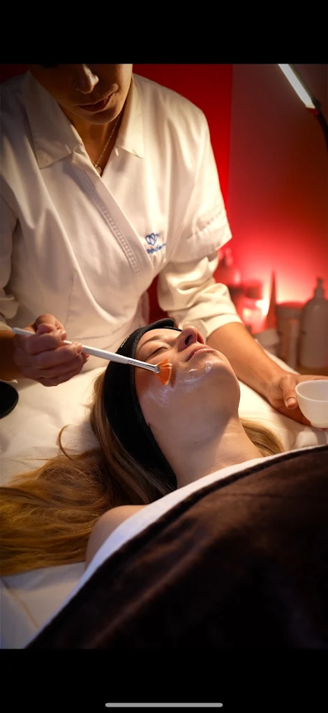

Entre les soins LUMINEA, la LED, le microneedling, le COSMELAN et le LPG visage, il est normal de ne plus savoir lequel choisir. Voici un guide simple, par besoin de peau, pour vous orienter avant le rendez-vous.
La règle de base : partir de votre besoin, pas du soin
Pour choisir un soin du visage, partez de votre besoin principal : éclat et hydratation, taches, rides et fermeté, ou relâchement. À chaque besoin correspond un soin de départ chez LUMIA, et un diagnostic visage de 30 minutes, à 20 €, permet de confirmer le choix.
Un même visage peut avoir plusieurs besoins à la fois, et les soins peuvent se compléter. L'idée n'est donc pas de trouver le soin parfait seul, mais de définir par quoi commencer. C'est ce que fait le diagnostic avant tout protocole.
Quelques repères aident à s'y retrouver. Les soins LUMINEA et la LED misent sur l'éclat, l'hydratation et la douceur. Le microneedling travaille la qualité de la peau en profondeur, sur la durée. Le COSMELAN cible les taches, et le LPG visage le relâchement. Quatre approches, quatre besoins, et un point commun : une praticienne infirmière D.E. qui adapte chaque protocole à votre peau.

Réserver mon diagnostic visage (nouvel onglet)
Teint terne, peau déshydratée : les soins LUMINEA et la LED
Si votre problème est un teint fatigué, un manque d'éclat, une peau déshydratée ou des imperfections, les soins LUMINEA sont le bon point de départ. Ils associent plusieurs technologies sur la machine EsthéSkin : nettoyage profond, hydradermabrasion, ultrasons, radiofréquence, micro-courants, jet peel à la vitamine C, masque et modelage.
Le soin existe en formules express de 30 minutes dès 45 €, puis en Découverte (1h15, 95 €), Avancé (1h15, 115 €) et Prestige (1h30, 135 €), ce dernier incluant le LPG visage ou la LED. La luminothérapie LED, une lumière froide sans chaleur ni douleur, se pratique aussi seule, dès 35 € la séance.
Pour entretenir la peau, un soin par mois est un bon rythme. Pour un objectif précis, on travaille souvent en cure de plusieurs séances rapprochées, puis on espace.
Rides, pores, cicatrices : le microneedling
Le microneedling vise les rides et ridules, le relâchement cutané, les pores dilatés, l'excès de sébum et les cicatrices d'acné. C'est un soin de régénération, sans injection, à 0,25 mm de profondeur, à 145 € la séance de 1 heure pour le visage et le cou.
Il se pratique en cure de 6 séances, une tous les 15 jours. C'est un engagement plus important qu'un soin d'éclat, mais aussi un travail plus profond. Les contre-indications, comme la grossesse, l'acné inflammatoire ou un traitement à l'isotrétinoïne, sont vérifiées lors du diagnostic. Pour comprendre le soin en détail, lisez notre article sur le microneedling, les exosomes et le PDRN.
Pour comparer les soins en détail, consultez nos pages soins du visage LUMINEA et LED, microneedling, soins dépigmentants COSMELAN et LPG visage.
Taches et pigmentation : le protocole COSMELAN
Pour le mélasma, les taches solaires, l'hyperpigmentation post-inflammatoire ou les taches liées à l'âge, le protocole COSMELAN de Mesoestetic est conçu pour atténuer les taches. Il se déroule en deux temps, en cabine puis à la maison, avec un suivi sur environ six mois, à partir de 650 €.
Un diagnostic de peau à 20 €, déductible du soin, est obligatoire : il vérifie que votre peau et vos taches s'y prêtent. Aucun résultat n'est garanti, et la protection solaire quotidienne reste indispensable. Notre article pour comprendre et atténuer les taches du visage détaille la démarche.
Fermeté et ovale du visage : le LPG visage
Pour raffermir, lisser et redonner de l'éclat en douceur, le LPG visage travaille zone par zone, du front au cou en passant par le regard, l'ovale, les mains ou le décolleté. La technique est non invasive, sans aiguille ni chirurgie.
Les soins zones sont facturés selon la durée, dès 20 € pour 10 minutes. Un bilan personnalisé de 40 €, offert pour tout achat de forfait, définit vos objectifs. Le LPG visage se marie très bien avec les soins LUMINEA et le microneedling.
Avant n'importe quel soin, quelques précautions s'imposent. Pour les soins LUMINEA, évitez le soleil et les UV 48 heures avant, les peelings et dermabrasions 15 jours avant, ainsi que le rétinol fortement concentré. Grossesse, allaitement, traitement aux rétinoïdes ou injections récentes de botox ou d'acide hyaluronique (attendre 5 semaines) peuvent faire reporter ou adapter le soin. Tout cela se vérifie ensemble lors du diagnostic.
Questions fréquentes
Quel soin du visage pour un teint terne ?
Les soins LUMINEA, dès 45 € en version express de 30 minutes, nettoient, hydratent et illuminent la peau. La luminothérapie LED peut s'y ajouter ou se pratiquer seule.
Peut-on associer plusieurs soins du visage ?
Oui, un même visage a souvent plusieurs besoins. Le diagnostic visage de 30 minutes, à 20 €, permet de choisir par quoi commencer et d'organiser les soins dans le bon ordre.
Comment savoir si un soin est adapté à ma peau ?
Chaque soin commence par un diagnostic qui vérifie vos contre-indications et votre objectif. Aucun résultat n'est garanti, mais le protocole est ajusté à votre peau.
À lire aussi

Cellulite : ce qui marche, ce qui ne marche pas
Crèmes, sport, alimentation, LPG : que peut-on vraiment attendre contre la cellulite ? Un point honnête sur ce qui aide, ce qui ne suffit pas, sans promesse.

Drainage lymphatique et LPG : la cure silhouette
La Cure Expertise Silhouette associe drainage lymphatique et LPG sur 6 séances, avec Emana by Sophie et LUMIA à Manosque. On vous explique son déroulement.

Préparer sa première séance d'épilation laser
Bilan, rasage, soleil, médicaments : tout ce qu'il faut faire (et éviter) avant votre première séance d'épilation laser pour qu'elle se passe au mieux.